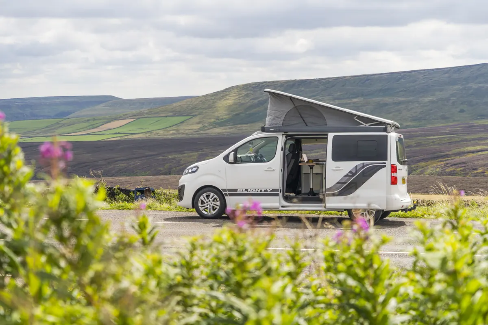

Las 5 mejores estaciones de energía portátiles de 2026
Hemos dejado fuera cualquier modelo que no use batería de litio-ferrofosfato (LiFePO4). No es purismo técnico: es que el coste por ciclo de una NMC la convierte en mala compra en cuanto la usas a diario.
Esta página contiene enlaces de afiliado. Si compras a través de ellos recibimos una comisión sin coste adicional para ti. El orden y las puntuaciones se deciden antes de mirar qué programa paga más: así puntuamos.

Tabla comparativa rápida
La columna que más gente ignora y más importa es la de ciclos: determina cuántos años te va a durar la inversión, y por tanto cuánto te cuesta de verdad cada kilovatio-hora almacenado.
| Modelo | Capacidad | Salida / pico | Ciclos | Peso | Nota | |
|---|---|---|---|---|---|---|
| EcoFlow Delta 2 Mejor equilibrio general | 1.024 Wh | 1.800 / 2.700 W | 3.000 al 80 % | 12 kg | 9,6/10 | Ver precio |
| Bluetti AC180 Más capacidad por euro | 1.152 Wh | 1.800 / 2.700 W | 3.500 al 80 % | 16 kg | 9,4/10 | Ver precio |
| Jackery Explorer 1000 Plus Ampliable a 5 kWh | 1.264 Wh | 2.000 / 4.000 W | 4.000 al 70 % | 14,5 kg | 9,2/10 | Ver precio |
| EcoFlow River 2 Pro La más ligera | 768 Wh | 800 / 1.600 W | 3.000 al 80 % | 7,8 kg | 9,1/10 | Ver precio |
| Bluetti AC200MAX Capacidad de cabaña | 2.048 Wh | 2.200 / 4.800 W | 3.500 al 80 % | 28,1 kg | 9,0/10 | Ver precio |
Especificaciones según ficha oficial de cada fabricante. Los precios cambian cada semana, por eso no los fijamos aquí: consúltalos en el enlace.
1. EcoFlow Delta 2 — el mejor equilibrio (9,6)
Es la que recomendamos en la mayoría de los casos porque acierta en las cuatro cosas que de verdad usas: 1.024 Wh de capacidad, 1.800 W de salida continua, 12 kg de peso y una carga desde la red que la lleva del 0 al 80 % en unos 50 minutos. Esa velocidad de carga es el argumento oculto: si viajas en furgoneta, una hora enchufado en un camping te resuelve el día.
Los 1.800 W mueven un hervidor o una cafetera exprés sin protestar, y con la función X-Boost estira hasta 2.700 W en arranques. Amplía hasta unos 3 kWh añadiendo batería externa, así que no te cierra la puerta si tu consumo crece.
A favor
- Carga del 0 al 80 % en unos 50 minutos
- Amplía hasta unos 3 kWh con batería extra
- Aplicación estable y control fino de la carga
- 12 kg: 85 Wh por kilo transportado
En contra
- Los ventiladores se oyen en carga rápida
- La batería de ampliación cuesta más de lo que debería
- Menos capacidad que la AC180 por precio similar
Ver precio actual de la EcoFlow Delta 2
2. Bluetti AC180 — más vatios-hora por euro (9,4)
Ofrece 1.152 Wh, un 12 % más que la Delta 2, normalmente por un precio similar o inferior, y con 3.500 ciclos en lugar de 3.000. Si tu criterio es capacidad por euro, esta gana la comparativa sin discusión.
El peaje son 16 kg. Cuatro kilos más que la Delta 2 no parecen mucho escrito, pero se notan cada vez que la subes a la furgoneta o la metes en un armario. Tampoco admite baterías de ampliación, así que la capacidad que compras es la que tendrás siempre.
A favor
- La mejor relación capacidad/precio de la gama
- 3.500 ciclos al 80 %
- Modo de carga silencioso
- Función SAI con conmutación rápida
En contra
- 16 kg: la más pesada de su capacidad
- Sin opción de ampliar batería
Ver precio actual de la Bluetti AC180
3. Jackery Explorer 1000 Plus — la que más durará (9,2)
4.000 ciclos hasta el 70 % de capacidad es la cifra más alta de la comparativa, y 2.000 W de salida le permiten mover una placa de inducción sin trucos de software. Además amplía hasta 5 kWh, lo que la convierte en la mejor base para una instalación que vaya a crecer.
Su problema es el precio por vatio-hora: casi siempre es la más cara de las tres de gama media. Y la aplicación va un paso por detrás de la de EcoFlow en funciones de control de carga.
A favor
- 4.000 ciclos: la vida útil más larga
- 2.000 W reales, mueve inducción
- Ampliable hasta 5 kWh
En contra
- Precio por vatio-hora alto
- Aplicación menos completa
Ver precio actual de la Jackery 1000 Plus
4. EcoFlow River 2 Pro — la más ligera que sigue sirviendo (9,1)
7,8 kg y 768 Wh. Es el punto donde una estación deja de ser un juguete y empieza a ser útil: cubre frigorífico pequeño, luces, móviles y portátil durante un fin de semana. Se carga por completo en unos 70 minutos.
Su límite es claro y hay que aceptarlo antes de comprar: 800 W de salida no mueven inducción, hervidor ni secador. Si tu cocina es de gas, no te afecta; si querías cocinar con electricidad, sube de gama.
Ver precio actual de la River 2 Pro
5. Bluetti AC200MAX — cuando ya no hablamos de camper (9,0)
2.048 Wh ampliables hasta 8 kWh, entrada solar de 900 W y salida de 30 A para enchufe de autocaravana. Es la opción para una cabaña, un taller o un respaldo doméstico serio que tenga que aguantar varios días.
Pesa 28 kg, así que la palabra «portátil» aquí significa «se puede mover entre dos personas». Y ojo: 2 kWh necesitan mucho panel para recargarse en un día, cuenta con 600 Wp como mínimo.
Ver precio actual de la AC200MAX
Cuál elegir según tu caso
- Camper con cocina de gas y teletrabajo: EcoFlow Delta 2. Sobra capacidad y la carga rápida compensa los días nublados.
- Presupuesto ajustado y el peso da igual: Bluetti AC180.
- Quieres cocinar con inducción: Jackery 1000 Plus o AC200MAX; por debajo de 2.000 W de salida no compensa.
- Fines de semana y mochila: EcoFlow River 2 Pro.
- Cabaña o respaldo en casa: Bluetti AC200MAX con 600 Wp de panel.
Antes de decidir, mide. El error más caro es comprar por capacidad y descubrir que el inversor no arranca tu aparato. Pasa tus consumos por la calculadora: te da los vatios-hora diarios y el pico de potencia que necesitas.
Análisis de la redacción de Estacionportatil. Comparamos especificaciones de ficha oficial y pruebas publicadas por terceros, y lo contrastamos con uso real en furgoneta camper. Puedes leer cómo puntuamos y qué no hacemos.